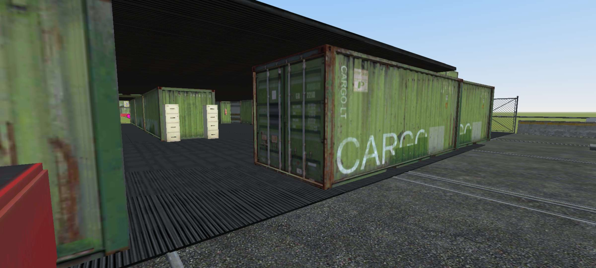
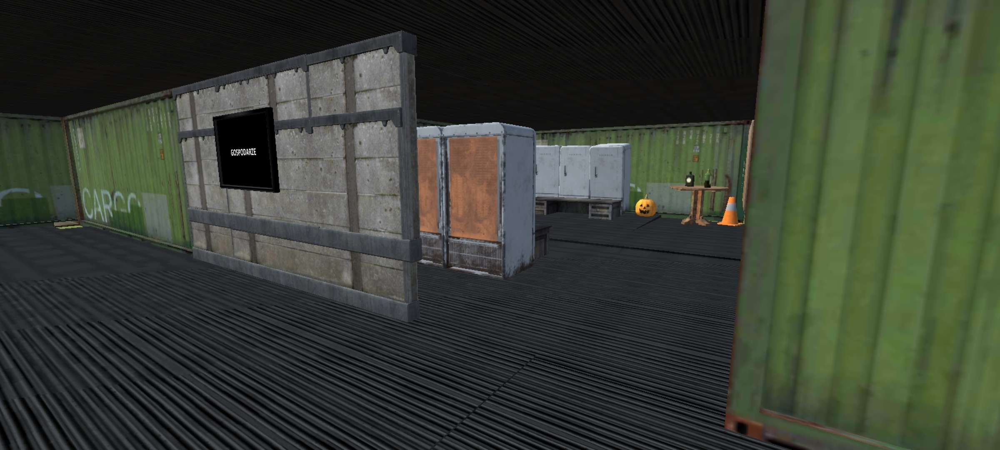
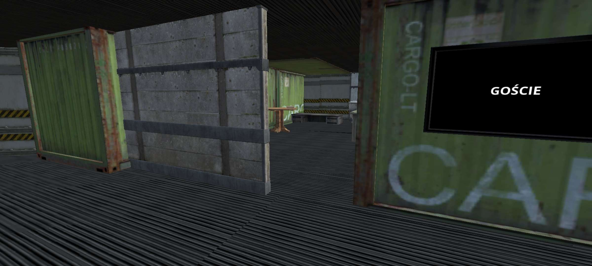
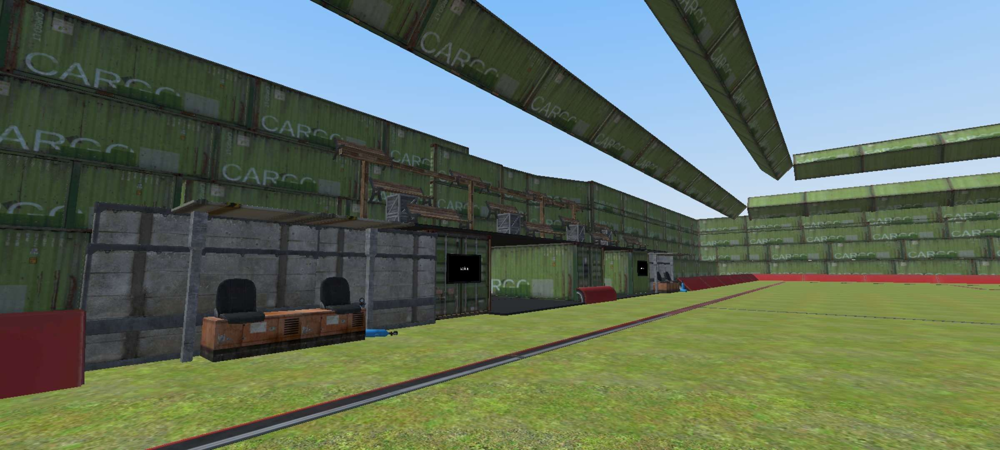
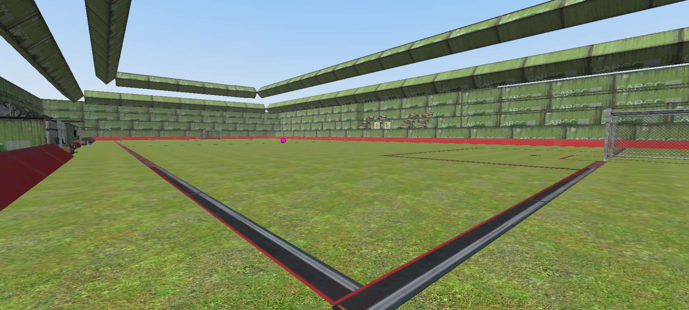
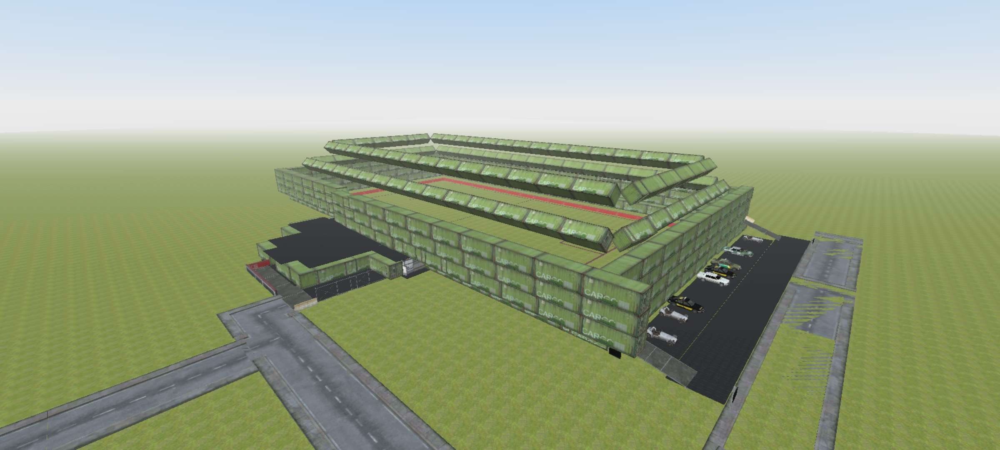
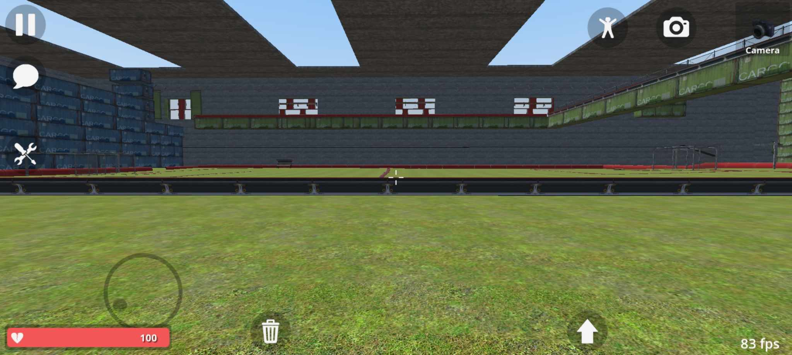
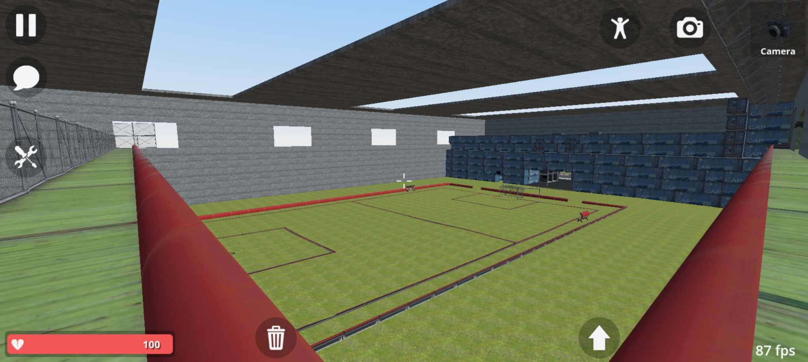
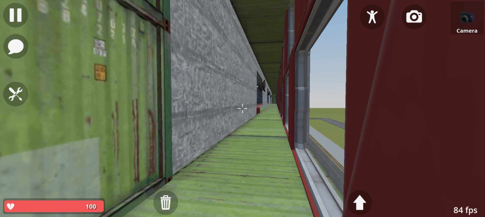
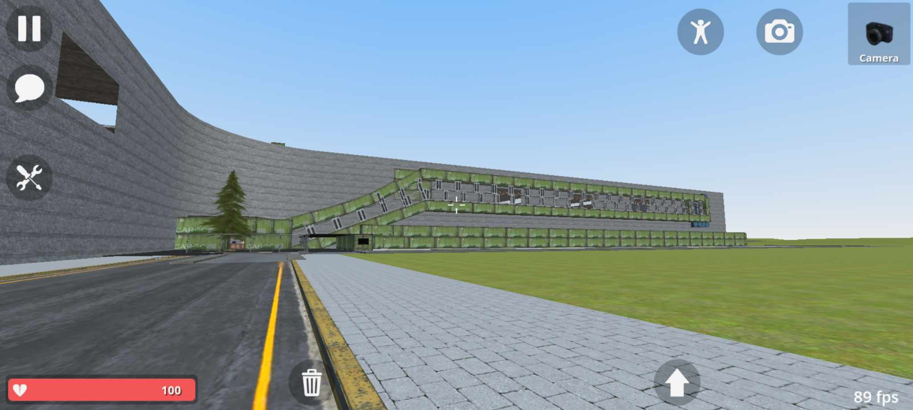

Stadion Narodowy Państwa Kabuto
Nowoczesny stadion zlokalizowany pod Radomiem. Wybudowany w styczniu 2024 roku.
Panel sterowania oraz wyświetlacz.
Trybuny zlokalizowane nad pokojem sterowniczym.

Wejście na stadion.
Szatnia ze szklanym dachem.
Stadion narodowy reprezentacji Śląska
Stadion na którym odbywają się reprezentacyjne mecze reprezentacji Śląska zaprojektowany stycznia 2024, zainwestowany przez dotacje ue na rzecz rozwoju sportu i kultury

Wyjście zawodników na stadion

Szatnia gospodarzy

Szatnia gości

Trybuny i ławka rezerwowych

Murawa

Stadion śląski
Stadion Pucharu Sztabu Złotego 2024
Stadion na którym odbywają się reprezentacyjne mecze reprezentacji Śląska zaprojektowany stycznia 2024, zainwestowany przez dotacje ue na rzecz rozwoju sportu i kultury

Murawa z boku

Murawa z trybun

Wejście na trybuny

Stadion z zewnątrz